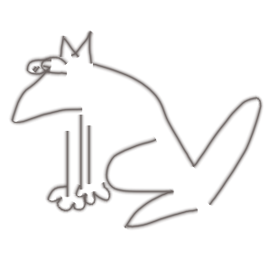
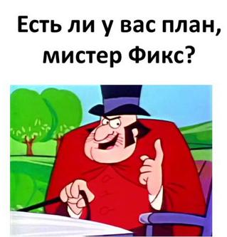

When the whole world is your database
Что делать, когда база данных — весь мир?
RubyMeditation #14, апрель 2017
Виктор Шепелев (zverok)

Представьте, что все данные мира уже доступны
…из Ruby
Например, так:
…
…или так:
Есть ли где взять эти данные?
Ага!
А какая польза?
Когда общие знания под рукой, это помогает пользователю приложения сделать осмысленный выбор.
То есть, то что люди могут легко найти…
…но ленятся.
А программы могли бы показывать — но не умеют.
- Продажа авиабилетов: какая там погода, валюта, криминальная обстановка, бары? Что с визой?
- Сайт с кинорецензиями: что ещё снял этот режиссёр? Что ещё снимали в этом городе? Сколько лет актёрам (в сравнении с героями)? Сравнить бюджет фильма с классическими фильмами.
- Новость про безвиз: данные для инфографики «кому ещё дали, какая у них экономика, сколько от них лететь, что у них с политикой»?
Всё по отдельности — несложно. Объединять сложнее.
И ещё…
Учёба: стандартное «напиши калькулятор» против «сравни длительность марсианских миссий»
Эксперименты: заполнить таблицы, дать реалистичные данные для графиков, быстро проверить теорию.
Наука: мы опоздали на праздник, но когда-то Rails казались опоздавшими на праздник веб-разработки…
А кроме того…
Просто интересная задача!
Решая её, можно найти подходы к:
- интеграции данных из разнородных API;
- развитию базовых библиотек языка;
- уточнению подходов к типизации сложных данных.
ОК, а в чём проблема?
HERE BE DRAGONS
- сложность протоколов запросов (пример: запрос к Википедии)
https://en.wikipedia.org/w/api.php?action=query&titles=Argentina&prop=revisions&rvprop=content&format=json
- негомогенность ответов (пример: извлечение текста из страницы Википедии)
1response['query']['revisions'].first['*']
- отсутствие общего знаменателя (пример: а теперь — язык запросов к OpenStreetMap)
node["name"~"holtorf"](50.7,7.1,50.8,7.25); out body;
И что делать?..

Богатая система значений
*Тут бы ещё поговорить о dry-struct и других похожих гемах
Плоская система типов
- Никакая типизация не спасёт в бесконечно-сложном мире;
- Мы возвращаемся к обычным «словарям» (почти как в JavaScript!)
 ;
;
- Но даже вложенные словари нам не нужны:
- каждый ключ нашей «сущности» (Entity) это либо «значение»,
- …либо ссылка на другую Entity.
Плоская система типов: пример
1Kharkiv.describe 2# => #<Entity:Kharkiv> 3# area: #<Measure 350 km²> | < базовые значения 4# coord: #<Geo::Coord 50°0′0″N,36°13′45″E> | 5# country: #<Reality::Entity?(Ukraine)> | < ссылка на связанный объект 6# head_of_government: #<Reality::Entity?(Hennadiy Kernes)>| < ссылка на какого-то урода 7# created_at: #<Date: 1654-01-01> | ...и т.д. 8# elevation: #<Measure 152 m> 9# official_website: "http://www.city.kharkov.ua/" 10# population: #<Measure 1,439,733 person> 11# tz_offset: #<TZOffset UTC+02:00>
Квалификация полей
По времени
Выборки, фильтры и индексы
Выборки, фильтры и индексы: Википедия/Викидата
- Главный индекс всего «общего знания»;
- Слабо формализованный (но есть способы!);
- Связано с (почти) всем остальным.
Выборки, фильтры и индексы: другие источники
- Десятки и сотни глобальных источников;
- Тысячи локальных источников;
- У всего есть API;
- …и все они разные!
Что у нас есть
$ gem install reality
1 gem installed
$ reality --interactive
*на самом деле нет
**но уже почти!
Что у нас есть (на самом деле)
reality/master— это демка, разработанная на грант Ruby Association зимой 2016/2017.- она прикольная! но не очень практичная
1m = Entity('The Matrix') 2# => #<Reality::Entity(The Matrix)> 3m.describe 4# ------------------------------ 5# #<Reality::Entity(The Matrix)> 6# ------------------------------ 7# actors: #<Reality::List[Hugo Weaving?, Keanu Reeves?, Laurence Fishburne?, Carrie-Anne Moss?, Joe Pantoliano?, Gloria Foster?, Robert Taylor?, Marcus Chong?, Paul Goddard?, Matt Doran?, Ada Nicodemou?, Steve Dodd?, Anthony Ray Parker?, Paul Goddard?, Belinda McClory?, Julian Arahanga?, Jeremy Ball?, Rowan Witt?]> 8# directors: #<Reality::List[The Wachowskis?, Lilly Wachowski?, Lana Wachowski?]> 9# genres: ["cyberpunk", "action film", "science fiction film", "post-apocalyptic film", "thriller film", "action thriller", "dystopian film", "science fiction action film"] 10# nominations: #<Reality::List[Academy Award for Best Film Editing?, Academy Award for Best Visual Effects?, Academy Award for Best Sound Editing?, Academy Award for Best Sound Mixing?]> 11# published_at: #<Date: 1999-03-31>
*а вот это правда работает
И это тоже:
Что мы делаем (reality/develop)
Цель: сохранить прикольность, добавить практичности.
$ git clone git@github.com:molybdenum-99/reality.git
$ cd reality
$ git checkout develop
Что мы делаем (reality/develop)
Observation — наблюдение: именованные и квалифицированные значения:
1o = Observation.new(:temperature, Measure['°C'].new(10)) 2#<Observation temperature=10°C> 3o = Observation.new(:temperature, Measure['°C'].new(10), at: '2017-04-08 22:30') 4#<Observation temperature=10°C at 2017-04-08 22:30> 5o = Observation.new(:temperature, Measure['°C'].new(10), at: '2017-04-08 22:30', source: yahooweather) 6#<Observation temperature=10°C at 2017-04-08 22:30 (yahooweather)> 7 8os = Observations.new(....list of observations....) 9os.at(timestamp) # => like "president of USA in 2012" 10os.from(:worldbank) # => like "population of Guatemala according to Worldbank"
Что мы делаем (reality/develop)
Entity — список “наблюдений”, связанных с одним объектом, из одного или многих источников:
1kh = Reality.get(wikipedia: 'Kharkiv') 2# => #<Entity wikipedia:Kharkiv, wikidata:Q42308?> 3kh.describe 4# country: #<Link Ukraine> 5# population: #<Measure 1,439,733 person> 6# .... 7# 8# other sources: wikidata, openweathermap 9 10kh2 = kh.load(:wikidata) 11# => #<Entity wikipedia:Kharkiv, wikidata:Q42308, openstreetmap:3154746?>
Что мы делаем (reality/develop)
DataSource: источник данных. Нечто, умеющее делать так:
…и становящееся источником entities!
Что мы делаем (reality/develop)
Источники, которые работают или близки к тому:
- Wikipedia/Wikidata (даже в первой демо-версии) — то, с чего всё начиналось! формализованные данные из википедии;
- OpenWeatherMap — погода;
- Worldbank — социоэкономическая статистика по странам.
(Не такое далёкое) Будущее
Ближайшие планы:
- Собрать всё вместе и сделать новый большой релиз;
- Добавить OpenStreetMap, Wikivoyage, Wikiquote и множество способов поиска данных;
- …и пойти дальше.
Join the reality!
Ссылки:
- github.com/molybdenum-99/reality — главный репозиторий;
- reality-show.molybdenum.io — онлайн-демка (немного устарела, но смешная!);
Я:
- Віктор Шепелєв, 34 роки, Харків, Україна;
- 15+ лет разработки, 10+ — на Руби; Toptal, mkdev.me, SciRuby;
- zverok.github.io, zverok.offline@gmail.com, zver_ok@Skype, gitter.im/zverok;
Благодарности:
- Сергій Мостовий, двигатель разработки первой версии;
- The Ruby Association, которая дала на неё грант;
- RubyMeditation за приглашение прочитать это доклад!